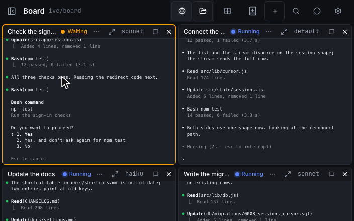

Projekte
Eine Plattform für Ihre KI-Agenten. Daneben entwickeln wir eigenständige Werkzeuge.
AIFOREU Workforce
Plattform
Menschen und Agenten. Ein gemeinsamer Arbeitsablauf.
AIFOREU Workforce entdeckenIm Zusammenspiel AnyUse, IVE und VerkehrsAI sind eigenständige Projekte mit jeweils einem eigenen Schwerpunkt. Zusammen ergeben sie einen Weg: herausfinden, was sich automatisieren lässt, es bauen, es einsetzen.
AnyUse
Automatisierung
Aus wiederkehrender Arbeit werden konkrete Vorschläge.
AnyUse kann erfassen, wie Mitarbeitende eine Aufgabe erledigen, und daraus eigenständig Vorschläge für Automatisierungen ableiten. Welche davon umgesetzt werden, prüfen wir gemeinsam.
Im Zusammenspiel AnyUse macht bestehende Arbeitsabläufe für Automatisierung nutzbar. Aufgebaut und gesteuert werden sie in unserer Plattform.
AnyUse kennenlernenVon der Arbeit zur Idee für eine Automatisierung
-
Arbeitsschritte erfassen
Wie wird eine Aufgabe heute erledigt?
-
Vorschläge ableiten
Welche wiederkehrenden Schritte lassen sich automatisieren?
-
Gemeinsam prüfen
Was passt zur Aufgabe und zum Unternehmen?
Ein Vorschlag ist der Ausgangspunkt für die gemeinsame Prüfung.
IVE
Softwareentwicklung
Mehrere Coding-Agenten. Ein klarer Überblick.
IVE bringt die Arbeit mit Claude Code, Codex und Gemini in einen gemeinsamen Entwicklerarbeitsplatz. Aufgaben parallel bearbeiten, wartende Agenten erkennen und Änderungen prüfen – lokal auf dem Mac.
Im Zusammenspiel Damit bauen wir selbst. Agenten-Systeme der Plattform lassen sich aus IVE anlegen, bearbeiten und testen, eigene Programme als Werkzeuge anbinden.
IVE entdecken
VerkehrsAI
Verkehrsplanung
Kreuzungen verstehen. Fundiert weiterplanen.
VerkehrsAI richtet sich an Kommunen und Planungsbüros. Lage- und Signalpläne werden zur Grundlage, um Fahrstreifen, Verkehrsbeziehungen und Querungen in einem nachvollziehbaren Modell zu bearbeiten.
Forschung und Entwicklung Unter VerkehrsAI arbeiten wir gemeinsam mit IOTEC im Forschungsprojekt AI4EU-Traffic an der Digitalisierung und Prüfung von Kreuzungsplänen.
Forschungsprojekt mit IOTEC
VerkehrsAI kennenlernenWelche Arbeit soll leichter werden?
Bringen Sie einen Ablauf oder eine konkrete Aufgabe mit. Wir besprechen, welcher Ansatz zu Ihrem Unternehmen passt.